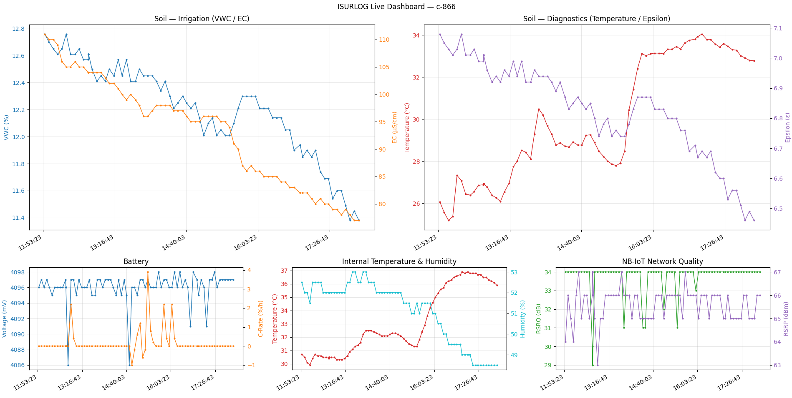

3. Real-Time Data via MQTT (Push Method)
3.1 Overview
This integration method is designed for applications that require immediate access to data, such as live monitoring dashboards, real-time alerting systems, or event-driven automation. The Isurlog platform pushes data to an MQTT broker the instant it is received from a device.
Data Format
Data is published as a raw binary payload (represented as a hexadecimal string) to maximize efficiency and minimize data consumption over cellular networks. Therefore, the client application must decode this payload to interpret the sensor values.
3.2 Connection Parameters
To receive the real-time data stream, clients must connect to the Isurlog MQTT broker using the following secure parameters:
- Broker URL:
mqttisurdash.isurki.com - Port (TLS): 8883 (Secure connection using TLS is mandatory)
- MQTT Version: The broker supports MQTT v5.0 and v3.1.1 clients.
- Username / Password: A unique username and password will be provided for secure access.
3.3 Topic Structure and Message Format
The topic structure and message format depend on the communication technology used by the device (LoRaWAN or NB-IoT).
3.3.1 LoRaWAN Devices (via ChirpStack)
LoRaWAN data is processed via the ChirpStack Network Server.
- Topic Structure:
application/{application-id}/device/{device_eui}/event/up - Message Format: JSON Object with Decoded Data. The ChirpStack Network Server automatically decodes the raw payload. Decoded sensor values are available directly within the
objectkey of the JSON. - Metadata: The JSON also includes valuable network metadata such as RSSI, SNR, gateway location, and transmission parameters.
Example of Payload JSON (ChirpStack)
This example shows the key structure and content of the object field with the decoded readings:
{
"deviceInfo": {
"applicationName": "Isurlog",
"deviceName": "c-123",
"devEui": "xxxxxxxxxxxxx"
},
"fCnt": 61,
"fPort": 2,
"data": "AHVoyD3dAHQP5wAAAABnAPcAaIcAAv+d",
"object": {
"AnalogInput_0": -0.99,
"DigitalInput_0": 0.0,
"HumiditySensor_0": 67.5,
"TemperatureSensor_0": 24.7,
"UnixTime_0": 1757953501.0,
"VoltageInput_0": 4071.0
},
"rxInfo": [
{
"gatewayId": "b827ebfffe70a454",
"rssi": -51,
"snr": 6.2
}
],
"txInfo": {
"frequency": 867500000,
"modulation": {
"lora": {
"spreadingFactor": 7
}
}
}
}
3.3.2 NB-IoT Devices
- Topic Structure:
isurlog/datos/{device_id} - Message Format: Raw Binary Payload (Hexadecimal String).
3.4 Payload Decoding (NB-IoT/Cayenne LPP)
The Isurlog payload format is a variant of the Cayenne Low Power Payload (LPP). This format is highly efficient and allows for multiple sensor readings to be sent in a single message.
Payload Structure
Each payload consists of one or more concatenated data chunks. Each chunk follows the structure:
Channel (1 byte) | Data Type (1 byte) | Value (N bytes)
- Channel: A user-defined identifier for the data source (0–255), typically corresponding to the physical input on the Isurlog.
- Data Type: A 1-byte code that specifies the type of data being sent (e.g., temperature, voltage).
- Value: The raw sensor reading, encoded over N bytes.
All multi-byte values are encoded in Big-Endian byte order. The first data payload transmitted begins with a Unix Timestamp chunk (Type $0\times75$).
Data Type Reference
| Sensor Name | Channel | Type (Hex) | Data Format | Value Calculation |
|---|---|---|---|---|
| Digital Input | 0 | $0\times00$ | 1-byte Unsigned Integer | Final Value = Integer |
| Analog Input | 0-3 | $0\times02$ | 2-byte Signed Integer | Final Value = Integer / 100.0 |
| Modbus Input | 0-3 | $0\times04$ | 2-byte Signed Integer | Final Value = Integer / 100.0 |
| PT100 Temperature | 0 | $0\times66$ | 2-byte Signed Integer | Final Value = Integer / 10.0 |
| Temperature Sensor | 0 (internal) / 1 (external, QWIIC) | $0\times67$ | 2-byte Signed Integer | Final Value = Integer / 10.0 |
| Humidity Sensor | 0 (internal) / 1 (external, QWIIC) | $0\times68$ | 1-byte Unsigned Integer | Final Value = Integer / 2.0 |
| Accelerometer | 0 | $0\times71$ | 6 bytes = three 2-byte Signed Integers (X, Y, Z) | Final Value (per axis) = Integer / 1000.0 (g) |
| Battery Voltage | 0 | $0\times74$ | 2-byte Unsigned Integer | Final Value = Integer (in mV) |
| Unix Timestamp | 0 | $0\times75$ | 4-byte Unsigned Integer | Final Value = Integer (seconds) |
| Battery C-Rate | 0 | $0\times77$ | 1-byte Signed Integer | Final Value = Integer / 10.0 (%/h) |
| Modem Signal Quality | 0 (RSRQ) / 1 (RSRP) | $0\times78$ | 1-byte Unsigned Integer | Final Value = Integer (channel 0: dB · channel 1: dBm). NB-IoT devices only. |
Note on channel semantics
for most sensor types, the channel identifies which physical input the reading came from (e.g. Analog Input 0-3). For Accelerometer, the same chunk packs all three axes together (there's no separate channel per axis). For Modem Signal Quality, the channel is repurposed to distinguish the metric (0 = RSRQ, 1 = RSRP) rather than a physical input.
3.5 Example: Decoding a Data Payload
Consider the following example payload received as a hexadecimal string:
007568C7D98100741024006701370068400002021D
This payload contains a timestamp followed by four sensor readings. The client application must process the payload in concatenated chunks:
Chunk 1: Timestamp
- Bytes:
007568C7D981 - Type:
0x75(Unix Timestamp) - Value:
0x68C7D981(1757927809 decimal) - Result: The reference time for this data record is 1757927809 (corresponding to Sept 15, 2025 09:16:49 UTC).
Chunk 2: Battery Voltage
- Bytes:
00741024 - Type:
0x74(Battery Voltage) - Value:
0x1024(4132 decimal) - Result: 4132 mV
Chunk 3: Internal Temperature
- Bytes:
00670137 - Type:
0x67(Internal Temperature Sensor) - Value:
0x0137(311 decimal, signed) - Calculation: $311 / 10.0 = 31.1 ^\circ C$
Chunk 4: Internal Humidity
- Bytes:
006840 - Type:
0x68(Internal Humidity Sensor) - Value:
0x40(64 decimal) - Calculation: $64 / 2.0 = 32.0\%$
Chunk 5: Analog Input
- Bytes:
0002021D - Type:
0x02(Analog Input) - Value:
0x021D(541 decimal, signed) - Calculation: $541 / 100.0 = 5.41$ (in engineering units)
3.6 Reference Implementation
A complete Python script demonstrating the connection, subscription, payload decoding, and a live-updating dashboard is provided in the accompanying file: isurlog_mqtt_demo.py.
Dependency Note
The script requires the accompanying library file, IsurlogLPP.py, to handle the decoding and calculation of sensor values from the raw Cayenne LPP payload format. Both files must be present in the same directory for the example to run.
A device is only ever one connectivity type, so the script subscribes to a single topic based on a DEVICE_TYPE setting ("nb-iot" or "lorawan", matching the same values used in the ISURLOG's own static_config.json) — not to both NB-IoT and LoRaWAN topics at once. For LoRaWAN, fill in your specific APPLICATION_ID and DEVICE_EUI rather than using a wildcard topic, which would otherwise subscribe to every device on every application your credentials can see.
Try It Instantly — No Credentials Needed
The script's connection parameters are pre-filled with a public, read-only demo so you can run it immediately, before contacting support for your own credentials:
- Device:
c-866, an NB-IoT device (DEVICE_TYPE = "nb-iot") — the same public demo device used in 2.5 Reference Implementation, with a Modbus soil probe (S-Soil MTEC-02B) wired to it. - Topic:
isurlog/datos/c-866— subscription is restricted to this device's own topic only, it cannot receive any other client's data.
To run it, from inside data_integration/:
python3 -m venv venv
source venv/bin/activate
pip install -r requirements.txt
python isurlog_mqtt_demo.py
When you're done: deactivate.
Live Dashboard
In addition to printing every decoded message as it arrives, the script opens the same dashboard layout as the InfluxDB reference implementation — two large panels on top for the soil probe (Soil — Irrigation: VWC/EC, Soil — Diagnostics: Temperature/Epsilon), three smaller ones below for the device's own housekeeping metrics (battery, internal temperature/humidity, NB-IoT signal quality) — except here it's fed live by the MQTT stream instead of a one-off historical query, with new points appearing as they're received (redrawn every 2 seconds).

This works by:
- Keeping a small in-memory buffer (the last 200 points) per field.
- Appending to the right buffer inside the MQTT
on_messagecallback as each payload is decoded. - Running the MQTT client's network loop in a background thread (
client.loop_start()), so the main thread is free to run matplotlib's own event loop (plt.show()) and periodically redraw from the buffers viamatplotlib.animation.FuncAnimation.
A pitfall worth knowing if you build your own live dual-axis chart
the figure, subplots, and each panel's twin Y-axis (ax.twinx()) are created once, in build_dashboard(). Only the line data is updated afterwards, on every animation frame (_update_line(), via line.set_data() + ax.relim() + ax.autoscale_view()). Recreating the twin axes on every redraw (e.g. calling ax.clear() then ax.twinx() again in a loop) leaves the previous twin axes behind instead of replacing them — they silently stack on top of each other frame after frame, which is what causes overlapping scales and labels spilling outside the plot after the chart has been running for a while.